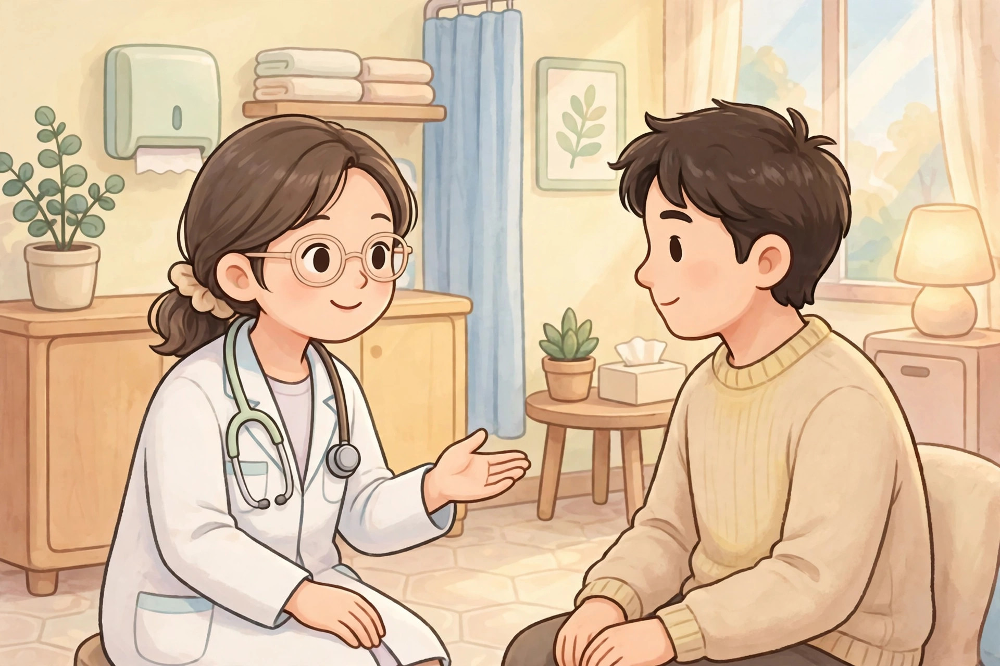

提示：如果頁面變成純文字、沒有圖片和播放按鈕，說明 Safari 閱讀器模式開了，點地址欄的書本圖標退出閱讀器，即可恢復彩色頁面。
看病
안녕하세요, 오늘 몸이 조금 아파서 병원에 왔어요.
身體不舒服去看病，學說頭痛、喉嚨痛、咳嗽，以及吃藥和好好休息。

안녕하세요, 오늘 몸이 조금 아파서 병원에 왔어요.
어제부터 머리가 아프고 목도 많이 아파요.
열은 없지만 기침이 조금 나고 코도 막혀요.
약을 먹고 물을 많이 마시면 좋아요?
네, 약을 잘 드시고 오늘은 푹 쉬세요.
감사합니다, 내일 또 올게요, 안녕히 계세요!
還沒播放，點上面的大按鈕開始。
慢速女聲朗讀，先聽一遍，再一句一句跟讀。如果大按鈕點了還是沒聲音，請點直接打開音頻，或點下面的備用朗讀。
逐句翻譯
- 你好，今天身體有點不舒服，所以來醫院了。
- 從昨天開始頭痛，喉嚨也很痛。
- 沒有發燒，但有點咳嗽，鼻子也塞住了。
- 吃藥、多喝水會比較好嗎？
- 是的，請好好服藥，今天好好休息。
- 謝謝你，明天我會再來，再見！
文法講解
1. -아서 / -어서：表示原因
是什麼：表示原因，意思像「因為……，所以……」。句型結構：動詞詞幹 + -아서 / -어서；詞幹母音是 ㅏ、ㅗ 時用 -아서，其他時候用 -어서。短文例句：오늘 몸이 조금 아파서 병원에 왔어요。（今天身體有點不舒服，所以來醫院了。）再舉一例：비가 와서 우산을 가져왔어요。（因為下雨，所以帶了雨傘。）容易錯的地方：原因在前、結果在後，不要把順序倒過來；-아서 / -어서 本身不變過去式，過去的意思放在結果句尾。
2. -고：連接兩個動作或狀態
是什麼：連接兩個動作或狀態，意思像「又……又……、而且……」。句型結構：動詞或形容詞詞幹 + -고。短文例句：머리가 아프고 목도 많이 아파요。（頭痛，喉嚨也很痛。）再舉一例：저는 밥을 먹고 물을 마셔요。（我吃飯，也喝水。）容易錯的地方：-고 連接的兩件事要是平行的描述，不要用 -고 表示轉折；要表示轉折時，應該用 -지만。
3. -(으)세요：客氣的請求或建議
是什麼：客氣的請求或建議，對別人說話時用。句型結構：動詞詞幹 + -(으)세요；母音結尾用 -세요，子音結尾用 -으세요。短文例句：오늘은 푹 쉬세요。（今天請好好休息。）再舉一例：물을 많이 마시세요。（請多喝水。）容易錯的地方：-세요 是對別人說的，不能用來說自己的動作；說自己的打算時，可以用 -ㄹ게요 或 -아요 / -어요。
常用詞彙
- 병원 醫院（byeong-won，第一音輕輕讀）—— 병원에 왔어요。（來醫院了。）
- 아프다 痛、不舒服（a-peu-da，讀音像「阿普達」）—— 머리가 아파요。（頭痛。）
- 머리 頭（meo-ri，讀音像「莫里」）—— 머리가 아파요。（頭痛。）
- 목 喉嚨、脖子（mok，短促的「莫」）—— 목도 많이 아파요。（喉嚨也很痛。）
- 기침 咳嗽（gi-chim，讀音像「基沈」）—— 기침이 조금 나요。（有點咳嗽。）
- 약 藥（yak，讀音像「呀」加上輕輕的 k 尾音）—— 약을 먹고。（吃藥。）
- 푹 쉬다 好好休息、充分休息（puk swi-da，讀音像「普 쉬達」）—— 푹 쉬세요。（請好好休息。）
跟讀小提示
一句一句斷開讀，逗號的地方停一下；「많이」「푹」可以稍微讀重一點，強調程度；第 4 句是問句，句尾「좋아요？」要輕輕揚起，不要讀成平調。
留給你的問題
오늘 몸이 어때요?